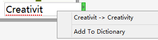
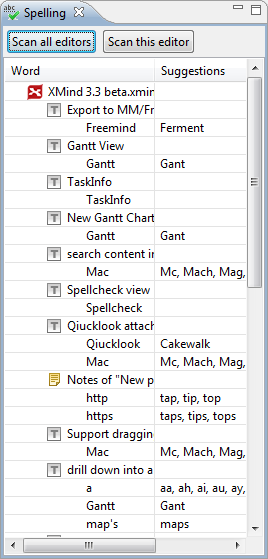

スペルチェック
XMind のトピックにテキストを入力すると、スペル チェックが自動的に起動されます。スペルミスの単語は、赤色の下線でマークされます。単語を右クリックして、候補の単語を置換するか、この単語を辞書に追加することができます。

XMind は、スペル チェックビューを提供しています。それを開くにはメニューからは、[表示]→[スペル]を選択してください。
* スペルチェッカービュー
スペル チェックビューは、2 つのボタンを持ちます。
- すべてのエディタをスキャン: すべての開いている XMind ブックのスペル チェックを行う。
- このエディタをスキャン: 現在開いている XMind ブックでスペル チェックを実行します。
すべてのスキャン結果は、候補をこのビューに表示します。 その間違ったスペルの単語をダブルクリックすると、マインドマップエディターに移動します。直接編集するか、そのままにできます。
次の手順をでスペル チェック設定を変更できます。
- メニューから [編集]→[設定]を選択します。
- [スペル]を選択します。
- 次のチェック ボックスを設定できます:
- スペルチェックを使用する
- "XMIND"のような単語を無視します
- "MangoSoftware"ような単語を無視します
- " http://www.xmind.net/"のような単語を無視します
- "xmind3"のような単語を無視します
- 小文字で始まるセンテンスを無視します
- XMind にあなたの辞書ファイル(*.dict) を追加します。
<p align="right">ヘルプセンター